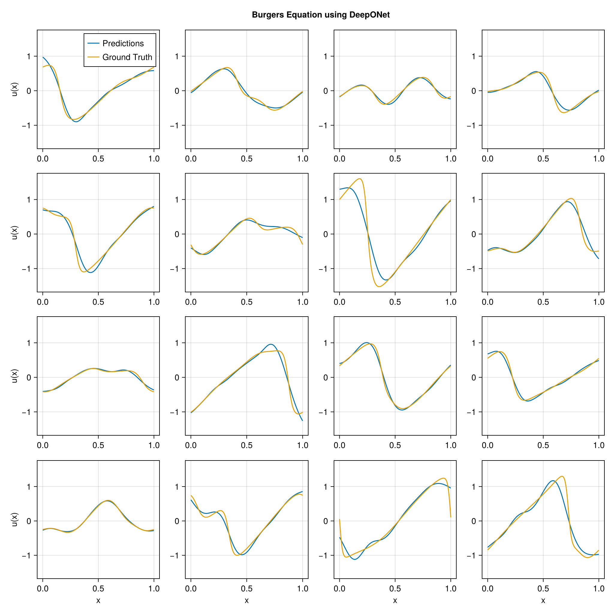

using DataDeps, MAT, MLUtils
using PythonCall, CondaPkg # For `gdown`
using Printf
const gdown = pyimport("gdown")
register(
DataDep(
"Burgers",
"""
Burgers' equation dataset from
[fourier_neural_operator](https://github.com/zongyi-li/fourier_neural_operator)
mapping between initial conditions to the solutions at the last point of time \
evolution in some function space.
u(x,0) -> u(x, time_end):
* `a`: initial conditions u(x,0)
* `u`: solutions u(x,t_end)
""",
"https://drive.google.com/uc?id=16a8od4vidbiNR3WtaBPCSZ0T3moxjhYe",
"9cbbe5070556c777b1ba3bacd49da5c36ea8ed138ba51b6ee76a24b971066ecd";
fetch_method=(url, local_dir) -> begin
pyconvert(String, gdown.download(url, joinpath(local_dir, "Burgers_R10.zip")))
end,
post_fetch_method=unpack
)
)
filepath = joinpath(datadep"Burgers", "burgers_data_R10.mat")
const N = 2048
const Δsamples = 2^3
const grid_size = div(2^13, Δsamples)
const T = Float32
file = matopen(filepath)
x_data = reshape(T.(collect(read(file, "a")[1:N, 1:Δsamples:end])), N, :, 1)
y_data = reshape(T.(collect(read(file, "u")[1:N, 1:Δsamples:end])), N, :, 1)
close(file)
x_data = permutedims(x_data, (2, 1, 3))
grid = reshape(T.(collect(range(0, 1; length=grid_size)')), :, grid_size, 1)
1×1024×1 Array{Float32, 3}:
[:, :, 1] =
0.0 0.000977517 0.00195503 … 0.997067 0.998045 0.999022 1.0
using Lux, NeuralOperators, Optimisers, Zygote, Random
using LuxCUDA
const cdev = cpu_device()
const gdev = gpu_device()
deeponet = DeepONet(;
branch=(size(x_data, 1), ntuple(Returns(32), 5)...),
trunk=(size(grid, 1), ntuple(Returns(32), 5)...),
branch_activation=tanh,
trunk_activation=tanh
)
ps, st = Lux.setup(Random.default_rng(), deeponet) |> gdev;
((branch = (layer_1 = (weight = Float32[-0.02805346 0.063497104 … -0.07220254 0.049839143; 0.047203492 -0.038261242 … 0.076058656 0.012314809; … ; -0.013942683 -0.033883445 … -0.0013518299 0.00621917; -0.0026126164 -0.05923746 … -0.014859912 -0.011699315], bias = Float32[0.0036337823, 0.03075933, -0.0059810765, 0.025605563, 0.0030725636, -0.012062974, -0.0021040142, 0.007220652, -0.026089076, 0.014820401 … -0.028721165, -0.028450564, -0.023165464, -0.0028908402, -0.0109567195, -0.0065086856, 0.028946508, -0.016285941, 0.02130564, 0.011281867]), layer_2 = (weight = Float32[0.39943656 -0.06922952 … -0.38044986 0.238281; 0.16927856 -0.3717199 … 0.29797828 -0.016699469; … ; -0.45437056 0.11396689 … 0.333718 -0.15764095; 0.3965226 -0.12746212 … -0.19494426 -0.46348536], bias = Float32[-0.01149157, -0.035754077, -0.110615544, -0.031651586, 0.048324313, -0.07025053, -0.12682907, 0.13775164, 0.005861868, -0.13482614 … 0.05801682, -0.08391046, -0.099413544, 0.030023055, -0.14257558, 0.1658933, 0.17305768, 0.1020375, -0.16664207, 0.11016889]), layer_3 = (weight = Float32[0.3745461 0.11815341 … -0.49335855 0.22837228; -0.113013625 0.26019105 … 0.16626364 0.33975843; … ; -0.05600378 -0.069188826 … -0.2989719 -0.48206306; 0.124269634 0.32269406 … 0.31794667 0.47918993], bias = Float32[0.09047624, -0.10604655, 0.053327058, -0.1189054, -0.04046795, -0.11759529, -0.14252071, -0.09024515, -0.063578166, -0.14692795 … 0.036115468, -0.020681184, 0.112024724, -0.11641065, 0.028430557, -0.14409196, -0.14677164, 0.13771912, -0.13125384, 0.15523931]), layer_4 = (weight = Float32[-0.32200238 0.31277287 … 0.49697194 -0.29130697; -0.12999658 -0.07396427 … -0.006968991 -0.2416103; … ; -0.29191542 0.14379063 … -0.24938364 0.21908423; -0.14355831 0.06173657 … -0.47269952 -0.20542517], bias = Float32[-0.15472251, 0.16935322, -0.115445845, 0.119972184, 0.05207909, -0.10522319, 0.08929526, -0.16648746, -0.041451383, 0.030139592 … 0.07102283, -0.076848455, -0.044149328, 0.06645538, -0.062170077, -0.05678837, 0.11584312, -0.11956266, 0.16869694, -0.07867898]), layer_5 = (weight = Float32[0.20819202 0.264128 … 0.10733039 -0.2587093; 0.15026222 -0.06258477 … 0.05614033 0.12708691; … ; 0.050671607 0.08636257 … -0.27508453 -0.24910116; -0.25532252 0.021971248 … 0.05234934 -0.22252741], bias = Float32[-0.11298198, -0.030730257, -0.0020224797, 0.015724251, -0.025774673, -0.0945582, -0.04618736, 0.0022328768, -0.13105609, -0.12474647 … -0.00435398, -0.053870775, 0.071594216, -0.121640086, -0.09479511, -0.15946388, 0.11290959, -0.10504592, 0.058341775, -0.04773746])), trunk = (layer_1 = (weight = Float32[1.4860051; -0.3646713; … ; 2.165358; -2.606604;;], bias = Float32[0.7383913, 0.48520935, 0.40612483, 0.76690495, 0.9312135, -0.77487814, 0.40091813, -0.5732665, -0.5366268, 0.16864502 … 0.17845583, 0.82679534, 0.9183228, -0.32852316, -0.26865125, -0.22236705, 0.22059894, 0.7269728, -0.13949585, -0.26036644]), layer_2 = (weight = Float32[-0.33910215 -0.20825152 … -0.15877733 0.42185524; 0.25562006 0.16610007 … 0.36613873 0.098596886; … ; 0.11786713 0.30092594 … 0.36280313 0.25352702; -0.111666344 0.4607412 … 0.04481378 0.23520158], bias = Float32[0.11062662, -0.1702945, 0.03769692, -0.15919897, 0.057880964, 0.014839715, -0.15893091, -0.10372044, -0.1040663, -0.11900173 … -0.120994814, 0.01344731, -0.09496067, 0.14654118, 0.05650866, -0.15441796, -0.1633726, -0.05438153, -0.012537718, 0.092216276]), layer_3 = (weight = Float32[-0.056668997 0.121241994 … -0.101559915 0.47827646; -0.3495895 -0.08742483 … -0.16503626 -0.012591305; … ; -0.16846018 -0.33414906 … 0.18187279 0.43449503; 0.019188907 -0.21552686 … -0.13857785 0.029503936], bias = Float32[-0.0063088774, -0.07311715, -0.044902936, -0.13715145, 0.077497624, -0.054837707, 0.061280947, 0.098169595, -0.16639931, -0.139958 … 0.023556316, 0.025488159, 0.16895305, -0.10844928, -0.03495198, -0.062191594, -0.09819775, 0.07529522, 0.04692289, 0.04003858]), layer_4 = (weight = Float32[0.48268446 -0.38264084 … -0.13853551 -0.46188614; 0.16858993 -0.18602598 … -0.19792986 -0.08975531; … ; -0.29861188 -0.16220573 … 0.0807563 -0.021776713; -0.28962395 -0.44130525 … -0.0695958 -0.027827965], bias = Float32[-0.09122462, 0.06635082, -0.05839077, 0.03679892, -0.0880882, -0.17406379, -0.02986456, 0.034771826, -0.10873819, 0.0628636 … -0.056243073, 0.007529471, 0.004748475, 0.03351117, 0.07287114, -0.16354987, -0.13271107, 0.16484322, -0.1118158, 0.07690576]), layer_5 = (weight = Float32[-0.11621779 0.0580148 … 0.30298537 0.0054270388; 0.0011619122 0.07439144 … 0.16536242 -0.19876462; … ; 0.22496407 -0.002328971 … -0.23979601 0.12587707; 0.24553293 -0.27493256 … -0.15747406 0.18173113], bias = Float32[-0.0395831, -0.04267815, 0.0062234667, 0.07152103, 0.08658904, -0.06943211, -0.11718114, -0.000643772, 0.04209817, 0.082450025 … 0.025077648, 0.012746808, 0.0335357, 0.1367183, -0.042128537, 0.059778497, 0.15772493, -0.023166774, 0.17159818, -0.1280071])), additional = NamedTuple()), (branch = (layer_1 = NamedTuple(), layer_2 = NamedTuple(), layer_3 = NamedTuple(), layer_4 = NamedTuple(), layer_5 = NamedTuple()), trunk = (layer_1 = NamedTuple(), layer_2 = NamedTuple(), layer_3 = NamedTuple(), layer_4 = NamedTuple(), layer_5 = NamedTuple()), additional = NamedTuple()))
x_data_dev = x_data |> gdev
y_data_dev = y_data |> gdev
grid_dev = grid |> gdev
function loss_function(model, ps, st, ((v, y), u))
û, stₙ = model((v, y), ps, st)
return MAELoss()(û, u), stₙ, (;)
end
function train_model!(model, ps, st, data; epochs=5000)
train_state = Training.TrainState(model, ps, st, Adam(0.0001f0))
for epoch in 1:epochs
_, loss, _, train_state = Training.single_train_step!(
AutoZygote(), loss_function, data, train_state)
if epoch % 25 == 1 || epoch == epochs
@printf("Epoch %d: loss = %.6e\n", epoch, loss)
end
end
return train_state.parameters, train_state.states
end
ps_trained, st_trained = train_model!(
deeponet, ps, st, ((x_data_dev, grid_dev), y_data_dev))
((branch = (layer_1 = (weight = Float32[-0.020008849 0.07164594 … -0.064472124 0.05774418; 0.052266955 -0.033051025 … 0.08082712 0.017230568; … ; -0.01728657 -0.03720504 … -0.0046989634 0.002867223; -0.0048987702 -0.061607905 … -0.016930223 -0.013885873], bias = Float32[0.029079486, 0.09339474, 0.020255923, 0.21605808, -0.04936069, 0.06871911, 0.03893629, -0.060511496, 0.14799015, 0.21850516 … 0.043762546, -0.121951096, -0.18928778, -0.009957704, 0.087607995, 0.051401034, -0.026602851, 0.042361658, 0.09326459, -0.059204753]), layer_2 = (weight = Float32[0.42127645 -0.06646599 … -0.3685039 0.23788455; 0.15068433 -0.37008053 … 0.36006787 -0.12506413; … ; -0.44580716 0.11586118 … 0.3589681 -0.1367849; 0.39393988 -0.13372408 … -0.18539572 -0.45763576], bias = Float32[0.020251976, 0.074358076, -0.1927731, -0.06932449, 0.2507068, -0.17192778, -0.07973819, 0.18534316, -0.09329063, -0.24524572 … 0.1673181, -0.2269272, -0.03797074, 0.048081864, -0.2522065, 0.1872456, 0.256406, 0.19728656, -0.20250212, 0.10543603]), layer_3 = (weight = Float32[0.37393916 0.13743076 … -0.4956954 0.25059116; -0.12986352 0.19383666 … 0.18528521 0.32942852; … ; -0.069328725 -0.09749627 … -0.26382875 -0.504702; 0.12065471 0.3033577 … 0.2826099 0.45226336], bias = Float32[0.13971023, -0.13795249, 0.19449766, -0.2761791, -0.0300503, -0.16480774, -0.16859694, -0.20270684, -0.06374315, -0.14487317 … -0.024858706, -0.069996975, 0.13776216, -0.2979715, 0.1701127, -0.11465909, -0.14447774, 0.12796025, -0.17307298, 0.18078195]), layer_4 = (weight = Float32[-0.3582121 0.31011745 … 0.464326 -0.295254; -0.13359326 -0.08095183 … 0.0016643588 -0.22947606; … ; -0.26326513 0.13950503 … -0.2096828 0.19500752; -0.23204641 0.1055929 … -0.49942014 -0.18053026], bias = Float32[-0.22132869, 0.15461534, -0.07642535, 0.09538171, 0.03226522, -0.13021015, 0.046871338, -0.2470371, -0.06925617, 0.028953128 … 0.08705753, -0.07825091, -0.06883752, -0.14221758, -0.10260643, 0.03460386, 0.11558399, -0.16021688, 0.2292037, -0.116174825]), layer_5 = (weight = Float32[0.23258115 0.30110994 … 0.11603998 -0.24132398; 0.15240794 -0.09830666 … 0.04462337 0.1345885; … ; -0.0051560653 0.065154634 … -0.28341004 -0.2526412; -0.252829 -0.016690899 … 0.024008026 -0.23173045], bias = Float32[-0.08795893, -0.038424138, -0.02059796, 0.02250902, -0.024675911, -0.0859097, -0.04549215, -0.011347313, -0.15765026, -0.116746604 … 0.020127352, -0.039107785, 0.064724274, -0.1595663, -0.09685584, -0.14664055, 0.11444259, -0.11685782, 0.0653359, -0.045044452])), trunk = (layer_1 = (weight = Float32[1.4987592; -0.36573407; … ; 2.1181512; -2.6155267;;], bias = Float32[0.76083547, 0.49923435, 0.4234011, 0.79778796, 0.9581228, -0.75170666, 0.4516543, -0.5453812, -0.5554422, 0.1834145 … 0.1733687, 0.93098116, 1.0606627, -0.300185, -0.27674592, -0.22941776, 0.18498844, 0.63477856, -0.20715691, -0.24668297]), layer_2 = (weight = Float32[-0.30707088 -0.15762219 … -0.14324309 0.3941155; 0.24589753 0.13898882 … 0.354308 0.10682587; … ; 0.058341596 0.17829281 … 0.36709204 0.3110143; -0.11579036 0.45773315 … 0.04430776 0.24016109], bias = Float32[0.14749943, -0.18064748, 0.011737596, -0.14518814, 0.039135076, 0.02595757, -0.14688651, -0.08782257, -0.10511092, -0.15173481 … -0.12652431, 0.017918877, -0.08074148, 0.13588637, 0.062181856, -0.15851358, -0.13835728, -0.066110894, -0.08592233, 0.08756212]), layer_3 = (weight = Float32[-0.03373202 0.11068864 … -0.073201835 0.48936883; -0.36132452 -0.082946874 … -0.19293979 -0.011202867; … ; -0.14968331 -0.35635668 … 0.15884264 0.4255311; 0.026060548 -0.20665962 … -0.10857094 0.024642136], bias = Float32[0.0030276694, -0.06405737, -0.020302083, -0.13634638, 0.07987356, -0.044256285, 0.05318965, 0.11111472, -0.17019206, -0.1357465 … 0.03234896, 0.033242777, 0.20151998, -0.12158047, -0.04436671, -0.0735359, -0.1081146, 0.07885769, 0.036744528, 0.017018741]), layer_4 = (weight = Float32[0.46162415 -0.3956757 … -0.13658771 -0.49901944; 0.17559202 -0.18201317 … -0.20788506 -0.11428099; … ; -0.30841386 -0.16638102 … 0.05557013 -0.015092752; -0.23851277 -0.38389415 … 0.032796297 -0.026125928], bias = Float32[-0.08447916, 0.068095766, -0.061352927, 0.025400868, -0.084537536, -0.18342958, -0.058018714, -0.015445877, -0.07404021, 0.057383925 … -0.037809096, -0.014755087, 0.016518638, 0.031326335, 0.09300349, -0.16741166, -0.108786106, 0.1591325, -0.13183144, 0.0977744]), layer_5 = (weight = Float32[-0.14107628 0.061614245 … 0.29839373 -0.017089358; 0.021340588 0.07869281 … 0.15155101 -0.19176753; … ; 0.22655766 -0.020640364 … -0.23305263 0.11481107; 0.27362335 -0.29458436 … -0.1435308 0.17776544], bias = Float32[-0.042885713, -0.044708103, 0.010257701, 0.07724114, 0.08359767, -0.066683374, -0.10364867, 0.00045548275, 0.04038033, 0.07582296 … 0.010812449, -0.037279814, 0.035242975, 0.14207673, -0.03726535, 0.06883481, 0.15904684, -0.035796225, 0.17593355, -0.113053255])), additional = NamedTuple()), (branch = (layer_1 = NamedTuple(), layer_2 = NamedTuple(), layer_3 = NamedTuple(), layer_4 = NamedTuple(), layer_5 = NamedTuple()), trunk = (layer_1 = NamedTuple(), layer_2 = NamedTuple(), layer_3 = NamedTuple(), layer_4 = NamedTuple(), layer_5 = NamedTuple())))
using CairoMakie
pred = first(deeponet((x_data_dev, grid_dev), ps_trained, st_trained)) |> cdev
begin
fig = Figure(; size=(1024, 1024))
axs = [Axis(fig[i, j]) for i in 1:4, j in 1:4]
for i in 1:4, j in 1:4
idx = i + (j - 1) * 4
ax = axs[i, j]
l1 = lines!(ax, vec(grid), pred[idx, :, 1])
l2 = lines!(ax, vec(grid), y_data[idx, :, 1])
i == 4 && (ax.xlabel = "x")
j == 1 && (ax.ylabel = "u(x)")
if i == 1 && j == 1
axislegend(ax, [l1, l2], ["Predictions", "Ground Truth"])
end
end
linkaxes!(axs...)
fig[0, :] = Label(fig, "Burgers Equation using DeepONet"; tellwidth=false, font=:bold)
fig
end
